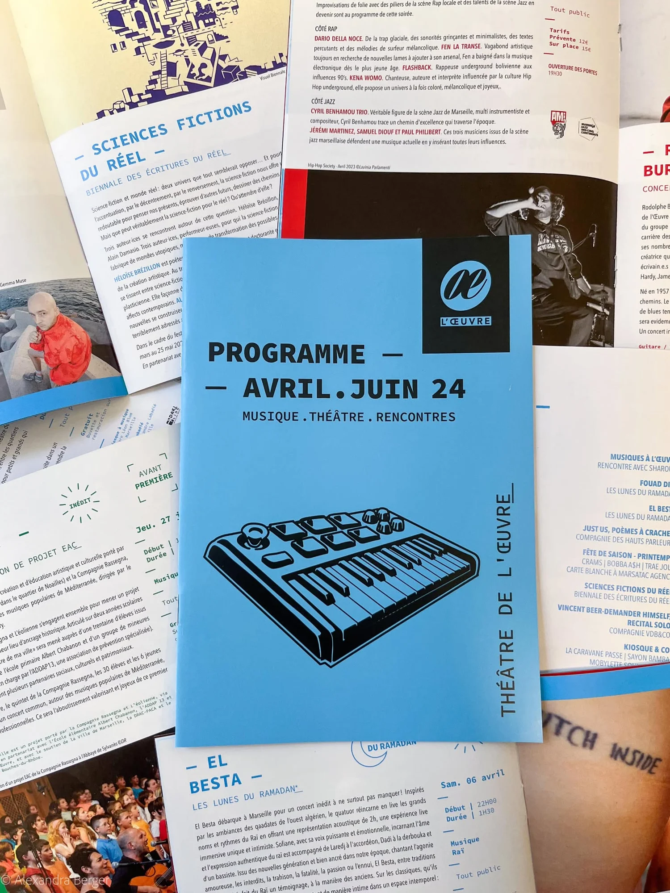
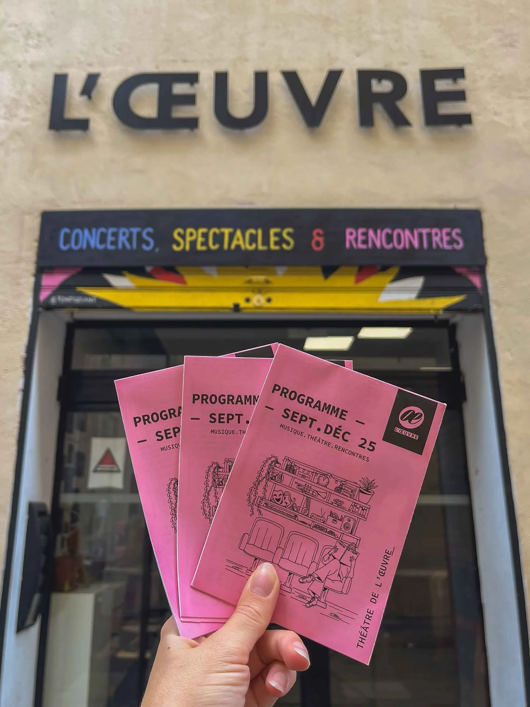

Communication & graphisme · Alternance puis freelance, 2022 – 2026
Pendant deux ans d’alternance en direction artistique, puis en freelance, j’ai conçu une grande partie de la communication du Théâtre de l’Œuvre, à Marseille : livrets de programmation, affiches de spectacles, dossiers institutionnels, dossiers de presse et réseaux sociaux.
Affiches de spectacles


Livrets de programmation

